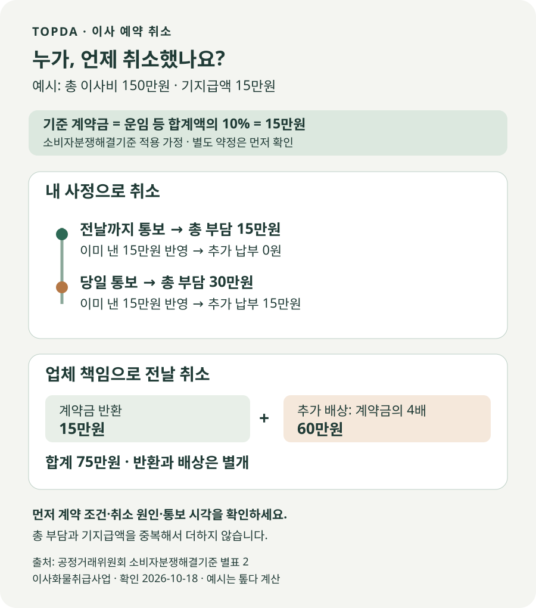

이사 예약을 취소하면 계약금을 돌려받을 수 있을까?
내 사정으로 이사 예약을 취소한다면 일찍 알렸다는 이유만으로 계약금 전액 환불이 보장되지는 않습니다. 별도 약정이 없을 때 참고하는 소비자분쟁해결기준은 이사 전 취소는 계약금 상당액, 당일 취소는 그 두 배 상당액을 소비자 부담으로 제시합니다. 이미 낸 돈은 정산에 반영해야 하므로 같은 계약금을 중복해서 더하지 마세요. 반대로 업체 책임으로 취소됐다면 계약금 반환 외에 통보 시점에 따른 배상을 검토합니다. 먼저 계약서·환불 약정과 취소 원인을 확인하고, 통보 시각과 정산 내역을 문자로 남기는 것이 순서입니다.
‘예약금’이라고 보냈어도 취소 조건은 계약 내용에서 찾습니다
이사 날짜가 바뀌거나 더 저렴한 업체를 찾으면 이미 보낸 예약금부터 생각납니다. “아직 이사도 안 했는데 돌려받는 것 아닌가?” 싶지만, 업체는 해당 날짜의 차량과 인력을 잡아 두었다고 말할 수 있습니다. 예약금·선금·계약금 중 어떤 이름으로 송금했는지만으로 환불 여부가 결정되는 것은 아닙니다. 무엇을 언제 얼마에 옮기기로 합의했는지, 취소 조건을 어떻게 안내받았는지를 함께 봐야 합니다.
종이 계약서가 없다면 견적서, 앱의 예약 확정 화면, 날짜·출발지·도착지·총액을 합의한 문자와 송금내역을 모으세요. 서명한 종이가 없다는 이유만으로 계약이 없었다고 단정하거나, 송금내역 하나만 보고 취소 약정까지 확정됐다고 생각하지 않는 것이 좋습니다. 전화로 정한 내용은 상대방에게 문자로 재확인하고 답변을 보관합니다.
계약서에 무료 취소 기간이나 환급액을 별도로 정했다면 그 내용부터 확인합니다. 별도 의사표시가 없을 때 분쟁 해결을 위한 합의·권고의 기준으로 쓰는 것이 소비자분쟁해결기준입니다. 소비자 거래 질서를 담당하는 정부 기관인 공정거래위원회가 품목별로 마련한 기준으로, 이사는 별표 2의 ‘이사화물취급사업’ 항목에 나옵니다. 계산표 자체가 법원의 확정판결이나 자동 환급 명령은 아닙니다.
소비자기본법 제16조 제3항도 이런 성격을 정합니다. 업체가 사용하는 ‘이사화물 표준약관’은 계약 조건을 정하는 표준 서식이며, 내 계약에 어떤 문구가 반영됐는지 확인해야 합니다. 이 글의 금액표는 소비자분쟁해결기준에 따른 비교입니다. 다른 약관의 지연 조항까지 섞어서 같은 배수를 적용하지 않습니다.
그렇다고 계약서에 적힌 내용이 언제나 유효한 것도 아닙니다. 취소하면 사유나 시점과 상관없이 총 이사비 전부를 내라는 식의 조항은 검토가 필요합니다. 약관규제법 제8조는 고객에게 부당하게 과중한 손해배상 의무를 부담시키는 약관 조항을 무효로 정합니다. 다만 금액이 불쾌하다는 이유만으로 스스로 무효라고 확정하지 말고, 안내받은 약관 원문을 가지고 상담받으세요.
내 사정으로 취소한다면 ‘전날’과 ‘당일’의 부담이 다릅니다
새집 입주가 늦어졌거나 가족 일정이 바뀌어 이용하지 못하게 됐다면 먼저 상대방의 잘못이 있는 취소인지부터 구분합니다. 고객 책임의 취소라는 전제에서 소비자분쟁해결기준은 약정운송일 전까지 통보하면 계약금 상당액, 당일 통보하면 계약금과 그 1배액을 합한 금액을 배상 기준으로 제시합니다. 이 항목에는 ‘며칠 전에 취소하면 무조건 무료’라는 구간이 없습니다. 무료 취소가 가능한 별도 약정을 받았다면 그 약정을 제시하면 됩니다.
이 기준에서 계약금은 운임 등 합계액의 10%로 정합니다. 계산의 기준 금액과 실제 송금한 돈을 구분하세요. 다음은 총 이사비 150만원, 계약금 15만원을 이미 지급했고 별도 약정이 없다는 가정입니다. 실제 시장의 평균 이사비나 업체 견적을 제시하는 표는 아닙니다.
| 취소 통보 시점 | 총 부담 기준 | 이미 낸 15만원 반영 후 |
|---|---|---|
| 이사 전날까지 | 15만원 | 계약금과 상계하면 추가 납부 없음 |
| 이사 당일 | 15만원 + 15만원 = 30만원 | 이미 낸 돈을 빼면 추가 15만원 |
근거: 소비자분쟁해결기준 별표 2 이사화물취급사업. 2026-10-18 확인. 고객 책임 취소, 총액·기지급금이 위 가정과 같은 경우이며 별도 약정·책임 다툼이 있으면 달라질 수 있습니다.
당일 취소 때 ‘계약금 두 배’라는 표현을 보고, 이미 낸 15만원에 30만원을 다시 더해 총 45만원이라고 계산하면 이 예시에서는 중복입니다. 총 부담 30만원 중 이미 낸 15만원을 반영하면 추가 정산액은 15만원입니다. 환불액이나 추가 청구액을 이야기할 때는 ‘총 부담’, ‘기지급액’, ‘차액’의 세 칸으로 적어 보세요.
실제로는 30만원을 먼저 보냈거나, 예약금 외에 잔금까지 선결제한 경우도 있습니다. 이때 송금액 전체가 곧 배수 계산의 기준이라고 단정하면 안 됩니다. 총액의 10%와 실제 지급액이 다르면 각각 적은 뒤 약정과 적용 기준을 확인해 정산해야 합니다. 많은 돈을 미리 냈다는 사실만으로 그 전부를 취소 비용으로 잃는다고 볼 수는 없습니다.
예컨대 같은 150만원 계약에서 30만원을 선지급했다면, 이 기준만 적용한 전날 취소의 총 부담은 15만원이므로 선지급액 중 나머지 15만원은 반환을 요청하는 계산이 됩니다. 업체가 다른 금액을 말한다면 해당 금액을 정한 약관과 설명 근거를 먼저 요청하세요. 다툼이 있는 추가 금액을 급히 송금하거나, 반대로 모든 연락을 끊기보다 정산 내역을 문서로 맞추는 편이 안전합니다.
업체가 취소하면 계약금 반환과 배상금을 나눠 적으세요
업체 책임으로 예약이 취소된 경우에는 내가 변심한 경우와 계산이 다릅니다. 단순히 “계약금은 돌려드릴게요”라는 말로 정산이 끝나는지 확인해야 합니다. 소비자분쟁해결기준은 운송일까지 남은 날짜와 당일 통보 여부에 따라 배상액을 달리 제시합니다. 아래도 총액 150만원·이미 낸 계약금 15만원이라는 동일한 가정입니다.
| 업체 통보 시점 | 계약금 반환 | 추가 배상 기준 | 합계 예시 |
|---|---|---|---|
| 이사 2일 전까지 | 15만원 | 기준 계약금의 2배, 30만원 | 45만원 |
| 이사 하루 전 | 15만원 | 4배, 60만원 | 75만원 |
| 이사 당일 통보 | 15만원 | 6배, 90만원 | 105만원 |
| 당일에도 통보 없이 불이행 | 15만원 | 10배, 150만원 또는 실손해액 배상 검토 | 10배 기준이면 165만원 |
표의 합계는 실제 수령을 보장하는 금액이 아닙니다. 책임 소재와 적용 약정이 확인되고 위 기준을 적용한다는 전제의 계산입니다. 특히 ‘10배 또는 실손해액’이라는 항목을 10배 배상에 실제 손해를 무조건 더하라는 뜻으로 읽지 마세요. 대체 업체 비용 등 손해가 크다면 지급한 금액과 손해의 원인을 입증할 자료를 갖추어 청구 범위를 상담해야 합니다.
대체 이사비가 190만원 들었다면 기존 예정 이사비 150만원과 새 지출 190만원을 모두 적고 영수증을 보관하세요. 단순 차이는 40만원이지만 실제 인정할 손해가 그 차액뿐인지, 보관료·숙박비까지 관련성이 있는지는 사정에 따라 달라집니다. 새 업체에 낸 돈 전부가 원래 업체의 추가 배상액이라고 자동 계산하지 않습니다.

추가요금 때문에 취소했는데 ‘고객 변심’으로 처리됐다면?
취소 문자를 누가 먼저 보냈는지와 취소의 책임이 누구에게 있는지는 꼭 같지 않습니다. 업체가 계약에 없던 요금을 요구해 이용자가 취소한 상황과, 이용자가 짐을 더 옮겨 달라고 요청한 뒤 비용이 맞지 않아 취소한 상황은 다릅니다. 처음 약속한 작업 범위와 바뀐 조건을 비교해야 합니다.
법제처의 이사업체 정하기 안내는 표준약관상 계약서 기재액을 넘는 청구를 원칙적으로 제한하고, 고객 책임으로 작업 내용 등이 바뀌었으며 변경 시 초과금액 가능성을 미리 알린 경우를 구분합니다. 고객이 요청한 추가 작업인지, 업체가 처음부터 알던 조건인지가 중요합니다. 추가금액을 거절했다는 이유만으로 소비자 책임의 취소라고 단정하지 마세요.
한국소비자원의 공개 조정사례에는 이사·청소가 함께 포함된 계약에서 업체 측 사정으로 비용이 추가됐는데 고객이 취소한 사건이 있습니다. 위원회는 그 사정을 살펴 고객 책임의 해제라고 인정하기 어렵다고 판단했습니다. 이는 개별 사례이며 모든 추가요금 분쟁에 같은 결론을 보장하지 않습니다. 견적서와 대화 기록으로 원래 약속을 확인하는 이유를 보여 주는 사례입니다.
날짜 변경도 먼저 확정 취소와 구별해 요청하세요. “이사를 취소합니다”가 아니라 “원래 예약은 유지한 상태에서 날짜 변경 가능 여부와 차액을 문의합니다”처럼 의사를 분명히 남길 수 있습니다. 변경이 가능하다는 답을 받으면 새 날짜·작업 시각·총액·기존 계약금의 처리·취소 조건까지 재확인합니다. 일정만 바꾼다고 반드시 무료가 되는 것은 아니며, 기존 예약을 취소하고 새로 잡는 방식인지도 물어봐야 합니다.
폭우나 태풍 예보만으로 당연히 위약금 없이 취소된다고 생각하지 마세요. 실제 운송이 불가능한 상황인지, 당사자 책임 없는 사유인지, 계약의 연기·해제 조항이 무엇인지 확인해야 합니다. 통제 안내와 업체 연락을 보관하고 안전한 대체 일정과 정산 조건을 협의하세요. 단순 변심 표를 재난 상황에 기계적으로 적용하지 않는 것이 좋습니다.
전화로 끝내지 말고 취소 시각과 계산을 문자로 확인하세요
- 원래 계약을 저장합니다. 업체명·연락처·예약번호, 약정 날짜와 시각, 작업 범위, 총액, 환불 조항, 송금내역을 한곳에 모읍니다. 앱 화면은 삭제되기 전에 저장하세요.
- 문의인지 확정 취소인지 구분합니다. 변경 가능성만 묻는지, 취소 의사를 통보하는지 명확히 쓰고 상대방 답변을 받습니다. 날짜 경계에 걸리면 보낸 시각과 수신·확인 자료를 함께 남깁니다.
- 원인과 날짜를 적습니다. 누가 어떤 사유로 이행하지 못하게 됐는지, 언제 통보했는지를 정리합니다. 상대방과 다르게 이해하는 부분은 대화 전체를 보관하세요.
- 정산표를 요청합니다. 적용 약정, 기준 계약금, 총 부담 또는 배상, 실제 기지급액, 돌려받거나 추가 낼 차액, 처리 예정일을 따로 적어 달라고 합니다.
- 합의 범위를 확인합니다. 계약금 반환만 받은 것인지 모든 손해까지 종결하기로 한 것인지 확인하고, 추가 청구를 포기하는 문구에는 의미를 이해한 뒤 동의합니다.
예를 들어 소비자가 전날 취소할 때는 “○월 ○일 이사 예약을 제 사정으로 취소하려 합니다. 총액 150만원, 기지급 15만원이며, 적용하는 취소 조항과 최종 정산액을 문자로 알려 주세요”라고 요청할 수 있습니다. 이는 합의를 돕는 예시이지 분쟁의 책임을 다투는 상황에서 그대로 보내야 할 법률 서식은 아닙니다.
업체가 먼저 못 온다고 했다면 “오늘 ○시 통화에서 ○월 ○일 예약 이행이 어렵다는 안내를 받았습니다. 취소 사유와 통보 시점, 계약금 반환·배상 내역을 각각 확인해 주세요”처럼 사실 확인부터 시작하세요. 이미 책임 다툼이 있다면 상대방의 표현을 그대로 기록하고, 내 잘못이라고 인정하는 문장이나 전액 종결 문구를 서둘러 넣지 않습니다.
합의가 안 되면 1372 상담 후 피해구제를 검토하세요
한국소비자원은 소비자의 거래 피해를 조사하고 사업자와 합의를 권고하는 공공기관입니다. 분쟁 대응 방법을 안내받는 1372 소비자상담센터를 이용하고, 상담으로 해결되지 않으면 한국소비자원의 피해구제를 검토할 수 있습니다. 전화 1372는 통화료가 드는 유료 상담 번호입니다. 상담 접수와 법원의 지급 명령은 서로 다른 절차이므로 전화 한 번으로 환불이 강제되는 것은 아닙니다.
자료는 긴 감정 설명보다 ‘계약일 → 지급일 → 변경 요구 → 취소 통보 → 정산 요청’ 순으로 정리하세요. 각 날짜 옆에 원본 화면이나 영수증을 붙이면 쟁점을 파악하기 쉽습니다. 운임·계약금·취소 배상·대체 업체 지출을 구분하고 같은 손해를 두 번 더하지 않는 것도 중요합니다.
금액과 책임에 관한 합의가 되지 않으면 분쟁조정이나 법원 절차까지 검토할 수 있습니다. 다만 계약 당사자가 누구인지, 약관과 실제 통보 내용이 무엇인지에 따라 결론이 달라집니다. 오늘 할 일은 최대 배수를 먼저 주장하는 것이 아니라, 계약 조건·통보 시각·기지급액을 정확히 맞추는 것입니다.
공식 자료와 적용 범위
- 국가법령정보센터 — 소비자분쟁해결기준 별표 2, 이사화물취급사업 · 계약금 10%와 당사자·통보 시점별 배상 기준
- 소비자기본법 제16조 · 합의·권고 기준의 성격
- 약관의 규제에 관한 법률 제8조 · 부당하게 과중한 손해배상 약관
- 법제처 찾기쉬운 생활법령정보 — 이사업체 관련 분쟁해결하기 · 취소와 다른 손해의 구분
- 법제처 — 이사업체 정하기 · 계약서·표준약관과 추가 운임
- 한국소비자원 — 이사비용 추가 요구에 따른 계약 해제 조정사례 · 개별 판단 사례이며 보편적 결과 보장 아님
- 한국소비자원 · 소비자상담·피해구제 이용 안내
정보 기준일: 2026-10-18. 이 글은 기준일에 확인한 공식 안내를 해설하며 새로운 제도의 발표·시행 소식이 아닙니다. 표와 도식은 총액 150만원·기준 계약금 및 기지급액 15만원을 가정한 자체 계산입니다. 소비자분쟁해결기준에 따른 예시이며 실제 계약의 별도 약정, 귀책사유, 통보 사실과 손해 입증에 따라 달라집니다. 단순 지연, 물품 파손, 청소 단독 계약은 별도로 판단해야 합니다. 일반 정보로 개별 법률 자문이나 환불·배상 보장이 아닙니다.
이사 일정과 계약 자료를 함께 챙기세요
- 이사 체크리스트업체·이동 일정·퇴거 준비 확인
- 이사 D-day 일정표예약과 행정 준비 날짜 정리